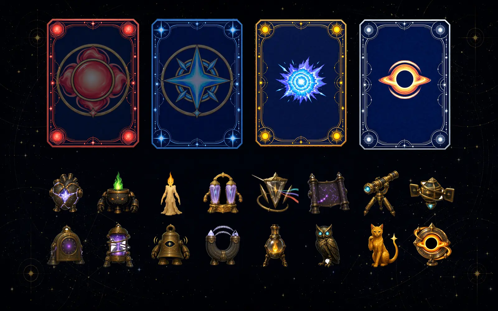

Stellar Forge
A deckbuilding roguelike where half of the build lives in the space in front of you. Star spirits stand on a disc that floats at arm's length, neighbouring spirits form a resonance chain, and where you put them decides what the chain is worth.
Project Overview
A late-night star workshop: you throw star cards into the forge, match recipes to brew a score, and hit a target every night. Spirits move in and help. Balatro proved the skeleton — classic card patterns, multiplicative scoring, passive build slots — and the proposition here is to move half of the build out of the card pool and into physical space. Every system is held to one review line: could a flat version do this? If yes, it is not the selling point. Currently in on-device iteration, targeting a store release.
Resonance: Building in Space
Four slots sit on the upper arc of the disc, and you pick the spirits up and rearrange them by hand. A spirit with the resonance trait links to the ones beside it into a chain — two adjacent at minimum, four at most — and the chain pays as a multiplicative tier, not a linear bonus, so one more link is worth more than one more spirit. A few spirits carry conditions that the presentation layer judges in real space instead: the satellite has to have orbited overhead when you score, the meteor fist has to be held clenched for two seconds before you play. Those conditions are deliberately kept inside the forward view cone — an early version asked players to turn and look around, which on a neckband is a comfort problem, not a feature. What is left is a build decision made by arrangement and timing rather than by a UI sort order.
Spirits Are Characters, Not Cards
Each spirit is a modelled creature standing on its own base — a bell, a brazier, an owl, a star cat — drifting slightly where it stands rather than sitting still as an icon would. When one triggers during scoring it pops in place and its sound comes from the direction it actually stands in, so you can tell which of the four fired without reading the log. That is the argument for making them objects instead of card slots: a spatial board can report itself through position and sound, and a flat one has to spend text on it.
Scoring, and Why Overscoring Pays
Score is stardust times multiplier, then multiplied again by the resonance bonus the chain earned. Clearing the target is not where it stops: anything over the target converts either into coins or into banked stardust that starts the next round, so a blowout always means something — that is the numeric outlet for the whole performance layer. Playing the same recipe repeatedly decays within a round, which pushes variety without banning anything, and one spirit exempts you from the decay at the cost of a fifty-percent shop markup, folding the anti-repetition rule back into the build itself.
Plain Language Instead of Poker
No J/Q/K/A, no flushes or straights. Four elements — metal, wood, water, fire; face cards become meteor, moon and sun, with the pole star as the single highest card; recipes are named for what they look like and every one carries a one-line explanation in the interface. The rule is that the replacement has to be understandable at a glance: the goal is lower cognitive load than the poker original, not a private vocabulary.
Gestures, Tuned on the Device
The gesture set went through several rounds on hardware. Playing a card started as palms-forward and misfired constantly, so it now requires a push past a distance threshold; discarding takes two fists at equal height and parallel, with the orientation requirement relaxed. The right hand takes priority and the left is used only when the right cannot be detected. There is also a one-handed mode — snap to play, closed fist at centre to discard — plus a dial to shuffle and a two-hand pinch to push the whole scene nearer or further.
A Desktop Mode That Runs the Real Code Path
Device round-trips are the real cost of XR iteration: a single-port neckband can eat an hour between a finished build and an installed one. So the build splits one flag into two ideas — is there hardware, and should the XR layout be used — which lets the same code path run in the editor with a mouse and keyboard. Layout, flow and interaction logic are now verified at the desk; gesture stability, real visual quality and performance still have to go on the headset.
Gallery
Card and spirit art below. UI captures are held back while the interface is being reworked.
